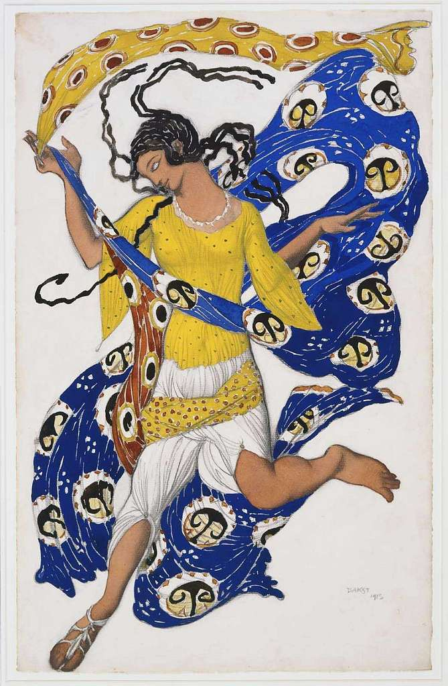
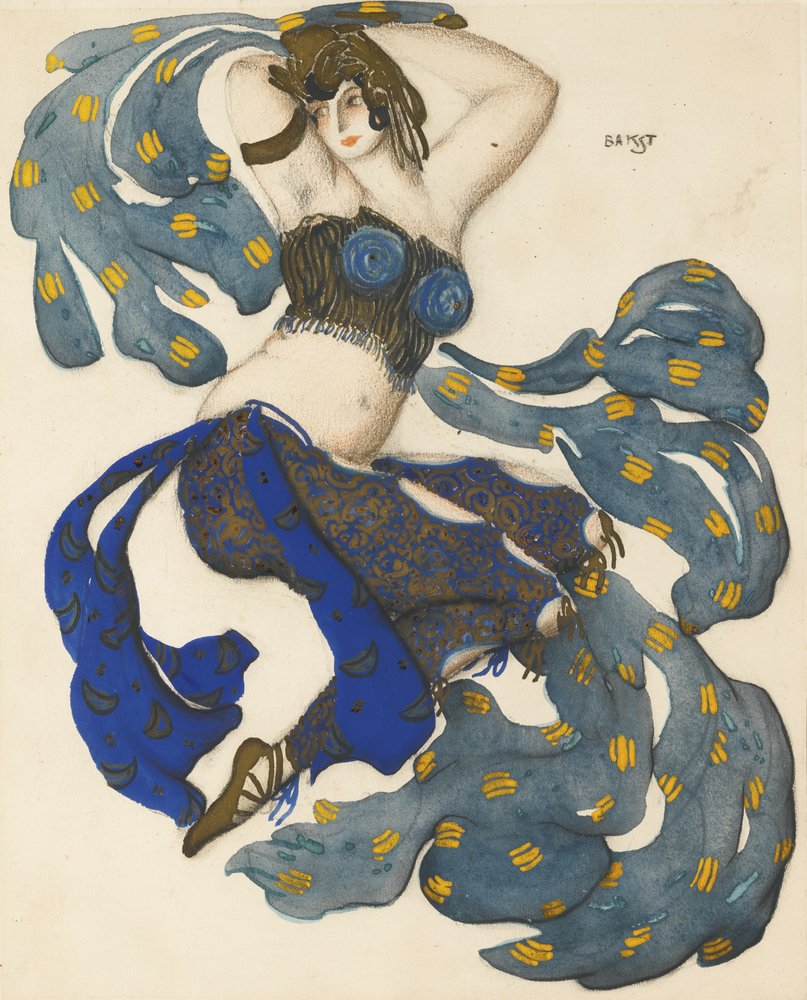

| Название | Дата создания | Материалы | Картина |
|---|---|---|---|
| Бабочка. Эскиз костюма для Анны Павловой | 1913 г. | Бумага, акварель, гуашь, карандаш |  |
| Эскиз костюма Синего Бога к балету «Синий Бог» | 1912 г. | Бумага, акварель, гуашь, карандаш |
 |
| Одалиска. Эскиз костюма к балету «Шахерезада» | Нач XX в. | Бумага, акварель, гуашь, карандаш |  |
| Танцовщица из балета «Жар-птица» | 1913 г. | Бумага, акварель |
 |
| Эскиз костюма Клеопатры для Иды Рубинштейн к балету «Клеопатра» | 1909 г. | Бумага, акварель, карандаш |
 |